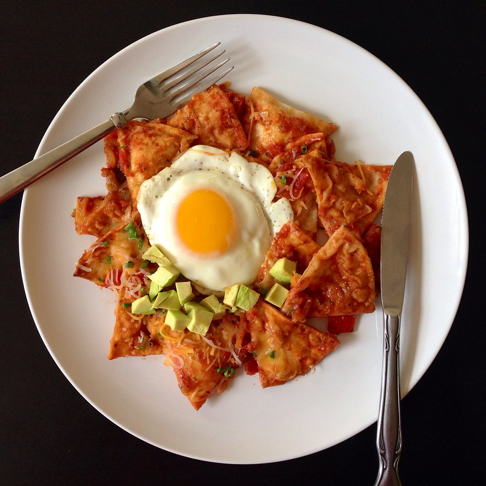

Chilaquiles

Ingredientes
- 6 Chiles
- 400g de totopos
- 3 Jitomates
- 2 dientes de ajo
- ¼ de cebolla
- 1 cucharada de aceite
- 2 ramas de epazote
- 2 huevos
- 200ml crema
- 250g de queso fresco
Preparación
Para la salsa:
- Hierve los jitomates por 3 minutos
- Agrega los chiles y déjalos hervir por 2 minutos
- Retiralos del fuego y deja enfriar
- Licúa los jitomates y los chiles en la misma agua donde hirvieron, agrega los ajos y la cebolla
- Cuéla la salsa, Pon sobre el fuego una cacerola con el aceite; cuando esté caliente, añade la salsa, las ramas de epazote y la sal.
Para los chilaquiles
- Prepara los huevos estrellados
- Coloca los totopos sobre el plato y báñalos con la salsa caliente
- Agrega crema, queso y cebolla al gusto. Coloca los huevos estrellados encima
- Disfruta!